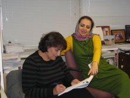

|
|
حمایت یکی از رهبران جنبش زنان در مراکش از کمپین
چهار شنبه4 دی 1387

تغییر برای برابری، فریبا داودی مهاجر - لطیفا ( (Latifa Jbabdi رییس اتحادیه زنان کنشگر درمراکش است. این اتحادیه برای تغییرقوانین خانواده در مراکش از سال 1987 فعالیت می کند. وی یکی از زنانی است که در کمپین یک میلیون امضاء برای تغییر نیز از سال 1980 تلاش فراوانی نموده است. همچنین او عضو کمسیون تلفیق و عدالت نیز می باشد و هم اکنون عضو پارلمان مراکش است. وی هماهنگ کننده کنفرانسهای منطقه ای کنفرانسهای غیردولتی زنان افریقایی برای آماده کردن کنفرانس حقوق بشر در وین در سال 1993 بوده است. لطیفا مشاور دائمی آژانس توسعه و در حال حاضر دررشته جامعه شناسی در حال گرفتن دکترا است.
هم وطنانش اورا یک رزمنده می دانند چرا که او بعنوان موسس انجمن مراکشی حقوق بشر زحمات بسیاری کشیده است. او بین سالهای 1983 تا 1984 سرپرست روزنامه 8 مارس بود و همچنین عضو ناظر حقوق کودک WAVE وشورای حقوق CCDH وهماهنگ کننده مراکش وجهان عرب در 8 مارس بشمار می رود. اودرسال 1998 بعنوان سفیر جامعه مدنی از سوی کمیته حقوق بشر سازمان ملل انتخاب شد. لطیفا چندین سال از عمر خود را در زندان بسر برد. و یکی از افراد فعال در عرصه حقوق زنان در این کشور است.
لطیفا قیافه ای بسیار جدی و مصمم دارد و می گوید ما به این نتیجه رسیده بودیم که باید قوانین مربوط به زنان تغییر کند. وبا استفاده از کمپین یک میلیون امضاء این قوانین را تغییر دادیم. ما معتقد بودیم قوانین جدید منافاتی با دین ندارد و خداوند بزرگ برای همه انسانها عدالت می خواهد. لطیفا بیانیه کمپین یک میلیون امضاء برای تغییر در ایران را امضاء کرد و آرزویی او این بود که همه زنها بتوانند حقوقی برابر با مردان جامعه خود داشته باشند. از جمله فعالیتهای او تلاش برای حق طلاق، حضانت فرزندان و دیگر حقوق مربوط به زنان است. لطیفا جایزه ای تحت عنوان مدیریت جهانی را به خود اختصاص داده، درحال حاضر به عنوان یک عضو از شورای مشورتی جهانی صداهای حیاتی است. او می گوید من ابتداخود را سکولار می دانستم و نمی دانم چرا بسیاری من را کافر می پنداشتند. در حالیکه من شروع به مطالعاتی در قرآن کرده بودم. در آن آیات زیادی پیدا کردم که می توانست فصل الخطاب حقوق برابر باشد. در سال 1980 سازمان ما کمپین یک میلیون امضاء را برپا کرد تا قوانین خانواده بنام موداوانا Moudawana را تغییر دهد. قوانینی که (بر اساس آن) زنان مراکشی شهروند درجه 2 بودند. هدف ما بالابردن سطح آگاهی زنان روستایی بود که در فقر و بی سوادی و حتی خشونت خانوادگی قرار داشتند. خشونتی که از قانون سرچشمه می گرفت. ما به مردم نشان دادیم که قانون موداوانا از قداست قرآن برخوردار نیست. بلکه یک قانون غیر دینی است که می تواند مورد نقد قرار بگیرد. ما معتقدبودیم که مسلمانیم و دین مارا از تفسیر های پیشرفته تر از اسلام منع نمی کند. در سال 1992 ، رهبران بنیاد گرا یک فتوا علیه من تمام کسانی که در این کمپین شرکت داشتند صادر کردند. این روحانیون به مساجد می رفتند، مارا تکفیر می کردند و علیه ما سخنرانی می کردند. مردم را علیه ما تحریک می کردند. گاهی ما فکر می کردیم که رسیدن به هدف بسیار مشکل است. گاهی نا امید می شدیم. اما همواره به راهمان ادامه می دادیم. یک روز یک زن فقیر و بی سواد که هیچ آگاهی از قانون نداشت به جلسه ی ما آمد. بعد از جلسه ما قانع شد که ما در باره منافع او هم صحبت می کنیم. او یکی از حامیان شده و در رساندن پیام ما تلاش بسیار کرد. لطیفا در آخر می گوید که امیدوار است کمپین یک میلیون امضاء برای تغییر در ایران بزودی به ثمر بنشیند و خواهران من در ایران شاهد تغییر قوانین تبعیض آمیز باشند